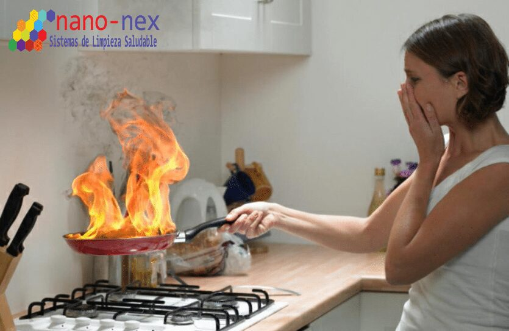

Introducción a la Limpieza después de un Incendio:
Después de un incendio, es normal y comprensible sentirse abrumado y desesperado por la situación. Sin embargo, es esencial abordar la tarea de limpieza y limpieza de manera adecuada para recuperar tanto la apariencia estética como la funcionalidad de tu hogar. En este artículo, proporcionaremos consejos útiles sobre cómo hacer una limpieza después de un incendio y cómo limpiar tu espacio vital.
Limpieza de las paredes y superficies:
Las paredes y superficies son áreas que pueden estar cubiertas de hollín, cenizas y restos carbonizados después de un incendio. Para limpiar estas áreas, necesitarás un equipo de protección, como guantes y una mascarilla para evitar la inhalación de sustancias tóxicas. Comienza eliminando el exceso de suciedad y hollín con una aspiradora o paño seco. Luego, utiliza un paño limpio y húmedo con una solución de agua y detergente suave para limpiar y desinfectar las superficies. Recuerda secar cuidadosamente con un paño seco después de limpiar. Si las manchas persisten, se recomienda contratar profesionales de limpieza después de un incendio para obtener mejores resultados.

limpieza de los muebles y pisos:
Los muebles y pisos pueden sufrir daños significativos durante un incendio. Si los muebles son recuperables, retira los cojines, tapicería y almohadas para aspirar y desodorizar enérgicamente. Utiliza un cepillo para eliminar el hollín y limpia con una solución de agua y detergente suave. Si los pisos son de madera, laminados o baldosas, límpialos con una mezcla de agua tibia y detergente suave. Si hay manchas persistentes o daños estructurales, es recomendable llamar a expertos en limpieza y limpieza para evaluar la situación y brindarte la mejor solución.
Limpieza del sistema de ventilación y aire acondicionado:
Durante un incendio, el sistema de ventilación y aire acondicionado puede verse afectado por el humo y el hollín. Para limpiarlos, asegúrate de que estén apagados y utiliza un aspirador con filtro HEPA para eliminar cualquier residuo. Luego, puedes limpiar las rejillas con un paño húmedo con una solución de agua y detergente suave para eliminar las partículas indeseables. Si el daño es extenso o no te sientes seguro haciéndolo tú mismo, puedes contar con profesionales en limpieza después de un incendio para una limpieza exhaustiva.
Considera la contratación de profesionales:
Aunque la limpieza después de un incendio puede parecer algo que puedes abordar por ti mismo, en algunos casos es recomendable contratar profesionales con experiencia y conocimientos en la materia. Estas empresas de limpieza después de un incendio poseen los conocimientos y el equipo adecuado para hacer frente a los desafíos que conlleva la limpieza de un hogar tras un incendio. Además, pueden ofrecerte servicios que van más allá de la limpieza, como la eliminación de olores persistentes y la desinfección profunda.
Conclusión:
La limpieza después de un incendio puede ser un proceso agotador y desafiante. Sin embargo, siguiendo los consejos mencionados anteriormente y, si es necesario, recurriendo a profesionales en el campo, podrás recuperar tu hogar y devolverle su apariencia y funcionalidad. Recuerda que después de la limpieza, es importante tomar las medidas necesarias para prevenir futuros incendios, como revisar instalaciones eléctricas o implementar medidas de seguridad en tu hogar.